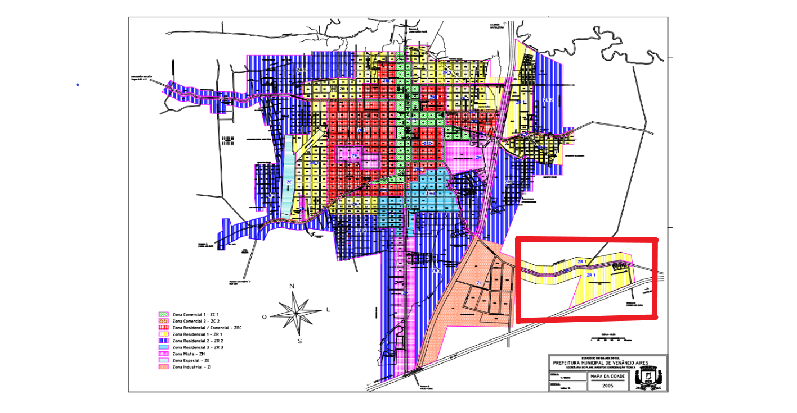
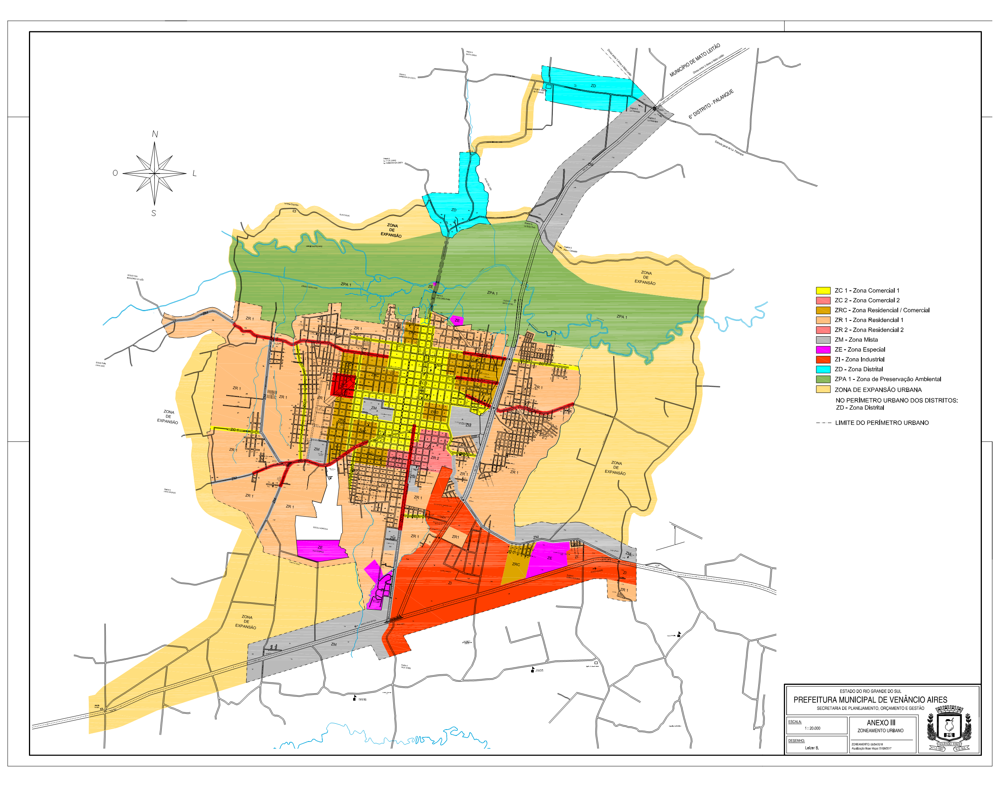

Transformações no Território
O Mapa com imagens de satélite pode comprovar o desenvolvimento do entorno das cercanias do câmpus. Ao observar a área destacada em vermelho, percebe-se a área antes da construção.
Nessa região, prefeitura municipal arcou com as melhorias de infraestrutura, terraplanagem, construção do sistema de rede de esgoto, calçamento das vias e, principalmente, alterou, no Plano Diretor do Município, a característica do mapa de zoneamento. Isso tornou o local em uma zona residencial comercial (ZRC).
Isso possibilita que, além de residências, atividades comerciais de pequeno porte possam ser instaladas naquela área. Atualmente, há uma lancheria, barbearia e até mesmo um estúdio de tatuagem.
Essas transformações nas das cercanias do câmpus não podem ser consideradas como mero acaso. Pois, os Institutos Federais foram concebidos não só para revolucionar a educação, mas também para fomentar o desenvolvimento regional, de modo a auferir reflexos em todo o entorno onde está assentado.
“O Campus da Escola Técnica Federal IF Sul ao lado do Campus da Unisc consolidou o zoneamento educacional e delimitou o Distrito Industrial de forma harmônica com as áreas habitacionais consolidadas abrindo mais novas frentes de parcelamento de solo urbano residencial. A cidade cresceu bastante com infraestrutura para este zoneamento.” (Giovane Wickert, Ex-prefeito e ex-assessor da Deputada Maria do Rosário)
Transformações no Plano Diretor do Município
Mapa Zoneamento - Antes da Implantação

2005
Fonte: Secretaria Municipal de Planejamento e Urbanismo de Venâncio Aires
Mapa Zoneamento – Alteração de Zoneamento em virtude da utilização - Zona Especial (destaque em Rosa)

2018
Fonte: Secretaria Municipal de Planejamento e Urbanismo de Venâncio Aires